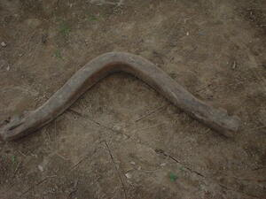
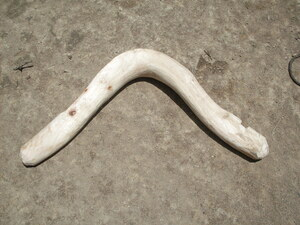

yuggu  
/yuggu/
Var. yuhu
n.
“yoke”
n.
a yoke (for harness)
Ka yuggu ne lalag iyan igpasabut ka kayu ne nabeggkung. Ka tuyù te yuggu iyan ka igsapey te lieg te kalabew wey ke baka naa eyew egkahanuy ka balsaan.
Meupiya ne yuggu ka Nara ne kayu su makehal ne egkahepù.
A yoke made from Nara tree is the best for it hardly broke.
Mahirap ka kalabew ne warè yuggu su kene egkahamit.
Carabao which is no yoke is not good because it will not usefull.
Eng. yoke; harness
Tag. yugo
Ceb. yugo
OCM: General Tools (412)
Online dict status: -
Usage level: L
v.
for someone (egyuyugu, migyuyugu/inyuyugu, agent, eg><ø-rdpCV-) to put a yoke to carabao (egyuyuguwan, inyuyuguwan/migyuyuguwan/pigyuyuguwan, location, eg><an-rdpCV-)
Eng. put, to (yoke)
Online dict status: -
Usage level: L
Updated by: RJH,AAA,RJH,QDL,RAA,RAA
Last updated: 01/Dec/2016
This page last updated: 03-Jan-2020
Copyright © 2009-2014, Matigsalug Language Christian Association, Inc